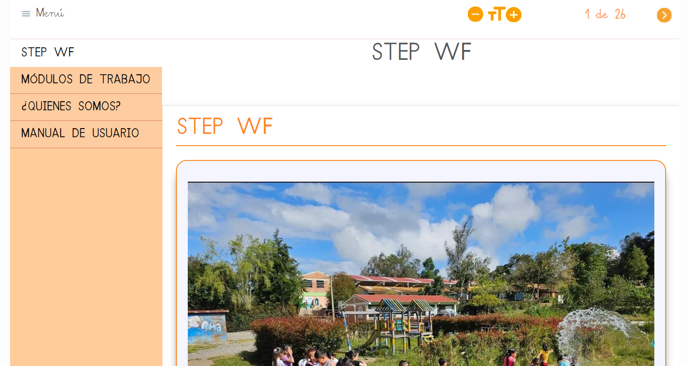
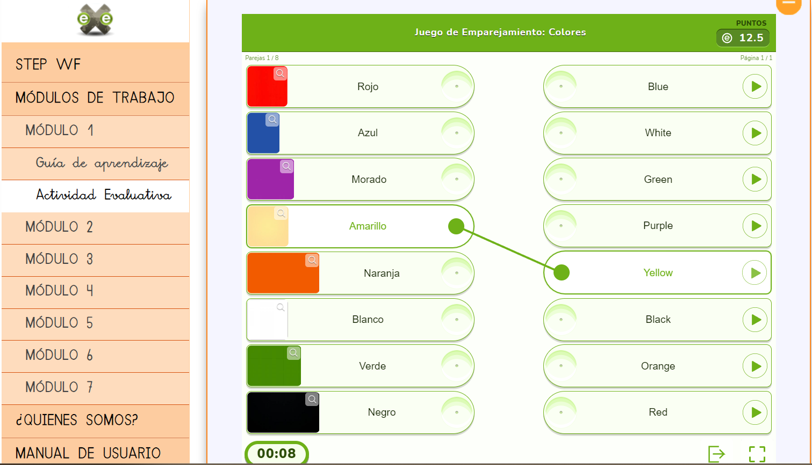
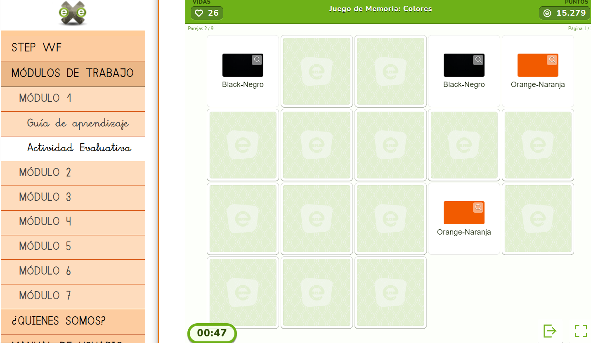
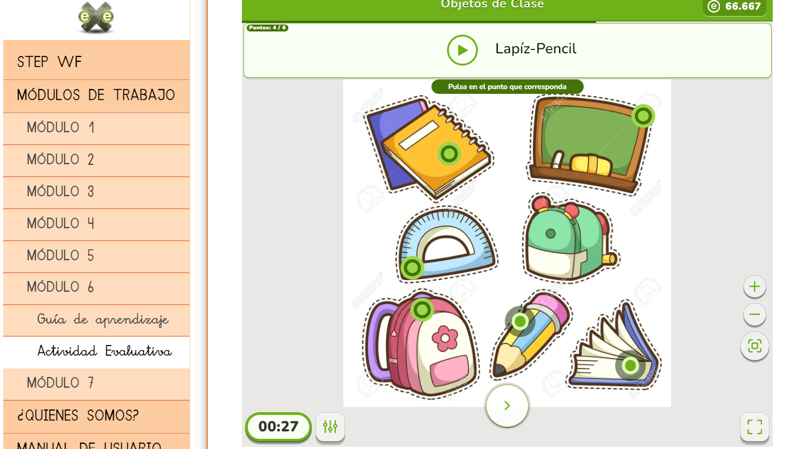

Manual de Usuario para el OVA STEP WF
¡Bienvenidos!
Esta es tu guía para usar el OVA. ¡Vamos a aprender y divertirnos!
1. ¿Qué es OVA?
OVA es un juego que te ayuda a aprender cosas nuevas como formas, colores, números y mucho más. Jugarás en una computadora o tableta y seguirás a personajes divertidos.
2. Empezando
Paso 1: Enciende la Computadora
Pídele a tu profesor que te ayude a encender la computadora o la tableta.
Paso 2: Abre el Programa
Busca el ícono del OVA en la pantalla de tu computadora. Haz clic en él para abrir el juego, que se verá así

3. Escoger un Módulo de Aprendizaje
Cuando el OVA se abra, verás diferentes botones a tu izquierda. Cada Boton es un Módulo de aprendizaje con diferentes temas.

4.Abrir la guía de aprendizaje en donde veras videos y actividades interactivas.

5.Actividad de cartas en la guía de aprendizaje en donde descubrirás el nombre de la representación de cada carta.


6.Al finalizar la guía de aprendizaje seleccionamos la actividad evaluativa en donde encontrarás divertidos juegos evaluando el tema visto en el módulo.

6.1 Actividad de relacionar columnas: encontraras fichas en la columna izquierda y tendrás que unirlo con la palabra correcta de la columna derecha que se presenta escrita y en audio.

6.2 Actividad juego del sapito: Escucharas una palabra en ingles y escrita en español en cada pregunta, y tendrás que seleccionar la imagen a la cual corresponde.

6.3 Actividad de memoria: encontraras fichas ocultas y tendrás que relacionar la palabra correcta a cada imagen oculta o la imagen a la palabra correcta.

6.4 Actividad mapa interactivo: Escucharas una palabra en ingles y español y tendrás que dar clic en el botón de la imagen correspondiente

En cada actividad, una voz amigable te dirá qué hacer. ¡Escucha con atención!
¡Si lo haces bien, el juego te felicitará y te mostrará una animación divertida!
7. Consejos para los Adultos
Los padres o maestros pueden ayudar a los niños a navegar por el OVA explicándoles las instrucciones y brindando apoyo. Las actividades están diseñadas para ser intuitivas, pero una pequeña guía puede mejorar la experiencia de aprendizaje.
8. ¡Diviértete!
Aprender con OVA es divertido y fácil. ¡Sigue jugando y descubriendo cosas nuevas!